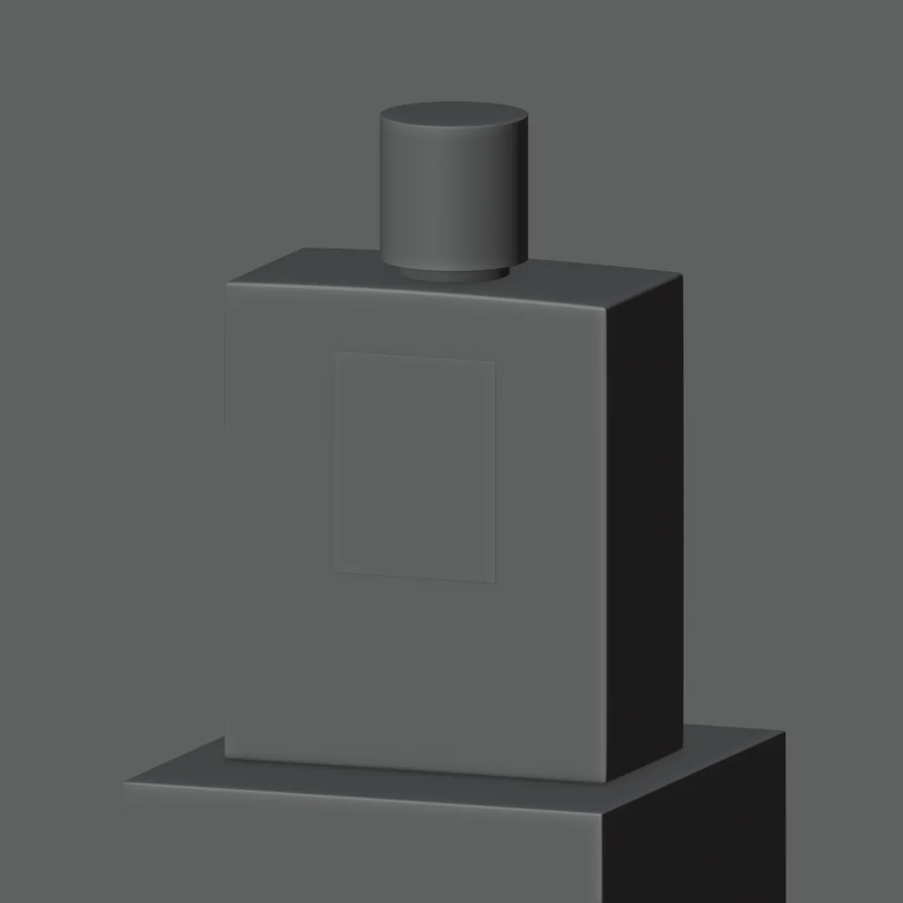
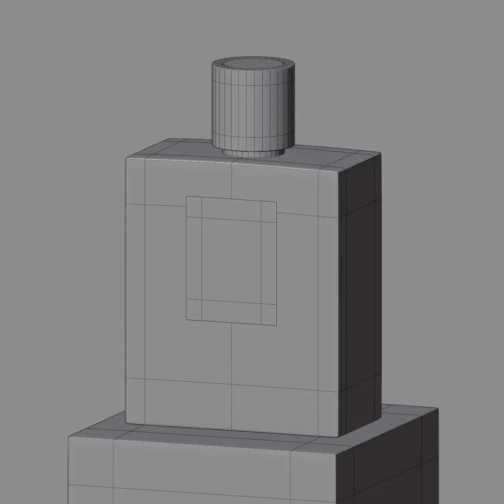
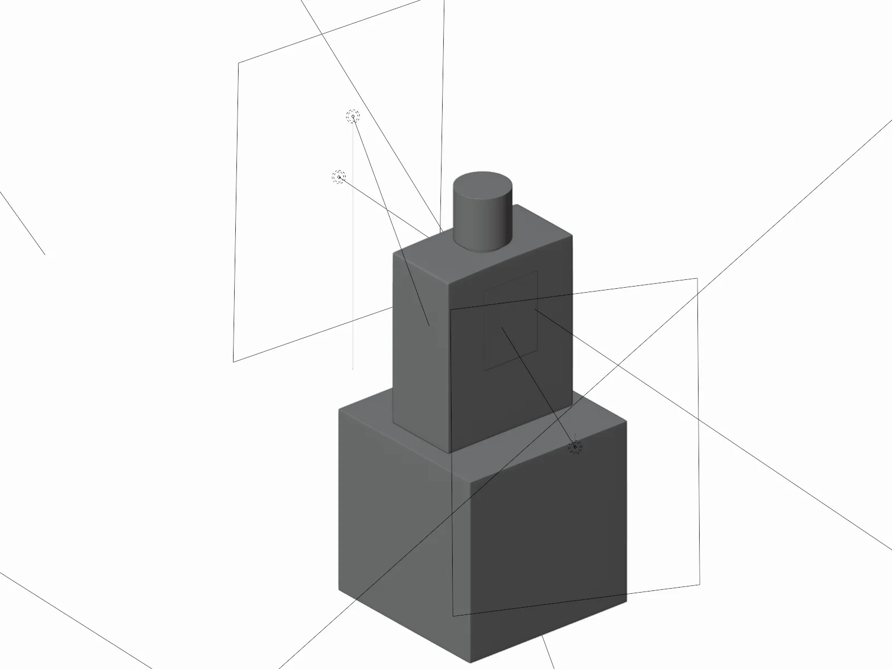

04 · Product visualization
Blue Bell — Eau de Parfum

Studio product visualization for a perfume concept. The brief I set myself: sell a fully transparent object with no color to rely on — so the whole shot rests on the blind-shadow pattern, the glass thickness and the contact shadow.
Blender (Cycles), modeled, lit and rendered. Packaging design by me.
Process shots included: clay pass, wireframe and lighting setup. The wireframe is the one I'd point at — clean subdivision topology, loops only where the bevels need them.
Process


